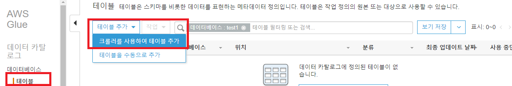
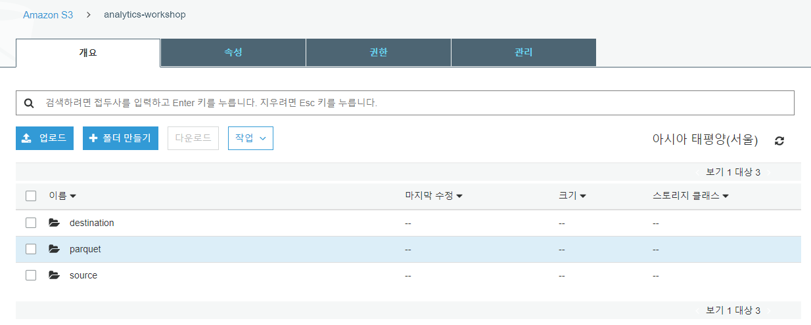
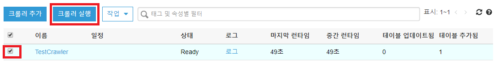
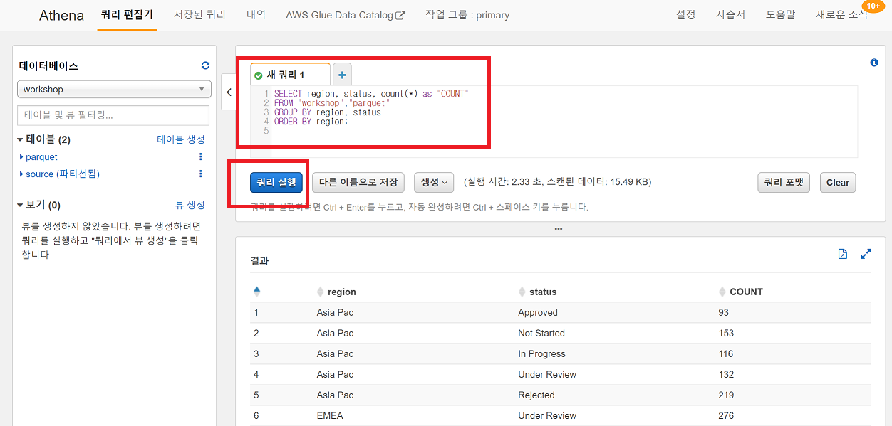
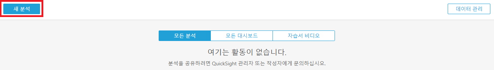
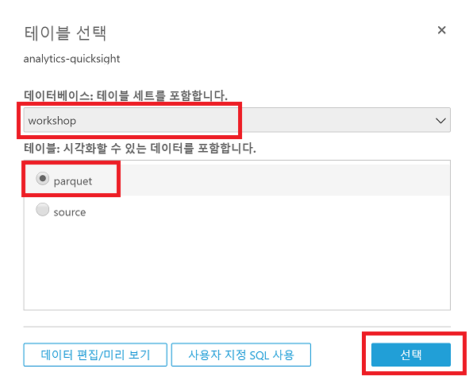
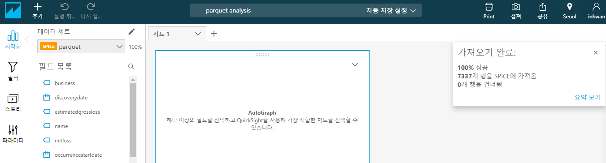

실습1. Glue, Athena, QuickSight로 수집한 S3의 데이터 분석
실습 소개
이번 실습에서는 실시간 또는 batch 방식으로 수집되어 S3에 저장한 데이터를 Glue, Athena, QuickSight 를 이용해 분석해봅니다.
실습 아키텍처
사전 작업
- 미리 생성한 Source 데이터를 S3에 업로드 하기 위해 Lab0에서 접속한 Session Manager에 접속합니다.
- 아래 명령어를 수행하여 Source.tgz 파일을 다운로드 받고, 압축을 해제한 다음에, Lab0에서 만든 S3에 데이터를 업로드 합니다.
cd /home/ssm-user
wget http://doc8se776ubdv.cloudfront.net/source.tgz
tar xvfz source.tgz
aws s3 cp source s3://analytics-workshop-[개인식별자]/source --recursive
AWS Glue
AWS Glue는 완전관리형 ETL(Extract, Transform, Load) 엔진입니다. 이번 실습에서는 실시간 또는 batch 방식으로 수집되어 S3에 저장한 데이터를 Glue, Athena, QuickSight 를 이용해 분석해봅니다. Hive 호환 External Table을 만들고 Athena, QuickSight로 데이터를 분석하고 시각화 합니다. 이 실습에서는 간단히 다음 커맨드로 batch 방식 수집을 대신하겠습니다..
- AWS Glue에서 ETL Job을 수행하기 위해서는 특정 IAM 역할이 필요합니다. IAM 서비스에 접속합니다. https://console.aws.amazon.com/iam
- 좌측 메뉴에서 정책을 클릭하고 정책 생성 버튼을 클릭합니다.
- 정책 생성 화면에서 JSON 탭을 클릭하고 아래 Policy를 복사하여 붙여 넣고 정책 검토 를 클릭합니다.
{
"Version": "2012-10-17",
"Statement": [
{
"Action": [
"s3:*",
"ec2:*",
"iam:*",
"glue:*",
"logs:*"
],
"Resource": "*",
"Effect": "Allow"
}
]
}
- 정책 검토 화면에서 이름은 GluePolicy를 입력하고 정책 생성 버튼을 클릭합니다.
- 좌측 메뉴에서 역할을 클릭하고 역할 만들기 버튼을 클릭합니다.
- 이 역할을 사용할 서비스 선택 에서 Glue를 클릭하고 다음: 권한 버튼을 클릭합니다.
- 검색 입력창에 방금 만든 GluePolicy를 입력하고 GluePolicy를 선택하고 다음: 태그 버튼을 클릭합니다.
- 태그 추가 화면에서 다음: 검토 버튼을 클릭합니다
- 검토 화면에서 역할 이름은 GlueRole을 입력하고 역할 만들기 버튼을 클릭합니다.
- 좌측 역할 을 클릭하고 GlueRole이 정상적으로 생성되었는지 확인합니다.
- AWS Glue (https://console.aws.amazon.com/glue) 로 이동합니다. 이전 실습에서 생성한 S3내 source 폴더 아래 파일 들을 크롤링하여 메타스토어 테이블을 만듭니다.
데이터 카탈로그 > 데이터베이스 를 클릭하고
데이터베이스 추가
를 클릭합니다.

- 데이터베이스 이름 은 workshop 를 입력하고 생성 버튼을 클릭합니다.
- 데이터 카탈로그 > 데이터베이스 > 테이블 을 클릭하고 테이블 추가 > 크롤러를 사용하여 테이블 추가 를 클릭합니다. 
- 크롤러 이름에 TestCrawler 입력 후 다음 을 클릭합니다.
- Crawler source type에 Data stores 를 선택 후, 다음 을 클릭합니다.
- 크롤링 할 S3 버킷 및 폴더를 지정합니다. 포함 경로 에 s3://analytics-workshop-[개인식별자]/source 을 입력하거나 탐색기 버튼을 클릭하여 analytics-workshop-[개인식별자] 버킷 아래 source 폴더를 선택 한 후 다음 을 클릭합니다.
- 다른 데이터 스토어 추가는 아니요를 선택하고 다음 을 클릭합니다.
- IAM 역할 선택 화면에서 기존 IAM 역할 선택을 선택하고 앞서 생성한 GlueRole을 선택한 후 다음 을 클릭합니다.
- 크롤러는 온디맨드 방식으로도 실행할 수 있고, 배치 방식으로도 실행할 수 있습니다. 실습에서는 온디맨드 방식으로 실행합니다. 빈도는 온디맨드 실행을 선택하고 다음 을 클릭합니다.
- 데이터베이스는 앞서 생성한 workshop를 선택한 후 다음 을 클릭합니다.
- 크롤러 설정을 모두 확인한 후 마침 을 클릭합니다.
- 데이터 카탈로그 > 크롤러 에서 생성한 TestCrawler를 선택한 후
크롤러 실행
을 클릭합니다.

- 크롤러는 S3에 저장된 파일을 분석하고 테이블을 생성합니다. 크롤링이 끝난 후 테이블 1개 (테이블명 : source)가 생성되었음을 확인합니다.

- 데이터베이스 > 테이블 에서 방금 생성된 source 테이블을 클릭하여 테이블 구조를 확인합니다.
- Kinesis Firehose가 s3://analytics-workshop-[개인식별자]/source 에 저장한 JSON 파일 포맷 스트림 데이터를 Parquet 파일 포맷으로 변경하고, 일부 컬럼의 데이터 타입을 변경한 후 s3://analytics-workshop-[개인식별자]/parquet 폴더에 파일을 저장하는 Glue ETL 작업을 생성하겠습니다.
- 우선 ETL후 결과 파일이 저장될 폴더를 생성합니다. S3 콘솔로 로그인한 후 analytics-workshop-[개인식별자] 버킷를 선택하고 parquet 폴더를 생성합니다. 
- Glue 콘솔(https://console.aws.amazon.com/glue) 에서 ETL > 작업을 선택한 후 작업 추가 를 클릭합니다.
- 작업 속성 구성 화면에서 이름은 TestJob을 입력하고, IAM 역할은 앞서 생성한 GlueRole을 선택합니다. 고급 속성 에서 작업 북마크를 활성화하여 Glue가 마지막으로 처리한 데이터를 기억하게 합니다. 다음 을 클릭합니다.
- 데이터 원본 선택 화면에서 source를 선택하고
다음
을 클릭합니다.

- 변환 유형 선택 화면에서 스키마 변경을 선택하고 다음 을 클릭합니다.
- 데이터 대상 선택 화면에서 데이터 대상에서 테이블 생성을 선택하고 데이터 스토어는 Amazon S3, 형식은 Parquet, 대상 경로는 s3://analytics-workshop-[개인식별자]/parquet 을 입력합니다.
다음
을 클릭합니다.

- occurencestartdate, discoverydate 컬럼의 데이터 형식을 date로 변경한 후
작업 저장 및 스크립트 편집
을 클릭합니다.

- 스크립트 내용을 검토한 후 상단의 작업 실행 버튼을 클릭하여 ETL을 시작합니다. 작업 완료까지 수 분이 소요될 수 있습니다.
- Glue ETL 작업이 끝나면 s3://analytics-workshop-[개인식별자]/parquet 폴더에 parquet 타입 파일이 생성됩니다.
- Glue ETL이 변환한 Parquet 파일을 크롤링하여 테이블을 생성합니다. AWS Glue > 크롤러 > TestCrawler를 선택하고 작업 > 크롤러 편집 를 선택합니다.

- 크롤러 정보 추가 화면에서 다음 을 클릭합니다.
- Specify crawler source type 화면에서 다음 을 클릭합니다.
- 데이터 스토어 추가 화면에서 다음 을 를 클릭합니다.
- 다른 데이터 스토어 추가 화면에서 예를 선택한 후 다음 을 클릭합니다.
- 데이터 스토어 추가 화면에서 포함 경로에 s3://analytics-workshop-[개인식별자]/parquet 을 입력한 후
다음
을 클릭합니다.

- 다른 데이터 스토어 추가 화면에서 다음 을 클릭합니다.
- IAM 역할 선택 화면에서 다음 을 클릭합니다.
- 이 크롤러의 일정 생성 화면에서 다음 을 클릭합니다.
- 크롤러의 출력 구성 화면에서 다음 을 클릭합니다.
- 리뷰 화면에서 마침 을 클릭합니다.
- TestCrawler를 선택하고 크롤러 실행 을 클릭합니다. 
- 크롤러 실행 후 parquet 테이블이 생성됩니다.

Amazon Athena
- Athena를 이용하여 테이블 데이터를 조회할 수 있습니다. Glue 크롤러가 만든 parquet 테이블을 클릭하고 작업 > 데이터 보기를 클릭합니다.

- Athena 콘솔이 열리면, 시작하기 를 클릭합니다.
- set up a query result location in Amazon S3 를 클릭합니다.
- 쿼리 결과 위치에 s3://analytics-workshop-[개인식별자]/query-result/ 를 입력하고 저장 을 클릭합니다.
- 다시 Glue 크롤러가 만든 parquet 테이블을 클릭하고 작업 > 데이터 보기를 클릭합니다.
- Athena 콘솔이 열리면 아래 쿼리를 수행합니다.
SELECT * FROM "workshop"."parquet" limit 10;
 7. ANSI 표준 SQL문을 통해 S3내 데이터를 조회할 수 있습니다.
7. ANSI 표준 SQL문을 통해 S3내 데이터를 조회할 수 있습니다.
SELECT region, status, count(*) as "COUNT"
FROM "workshop"."parquet"
GROUP BY region, status
ORDER BY region;

Amazon QuickSight
- 이번에는 Amazon QuickSight를 통해 parquet 테이블 데이터를 시각화 해 보도록 하겠습니다. QuickSight 콘솔로 이동합니다. https://quicksight.aws.amazon.com
- QuickSight에 가입하기 위해
Sign up for QuickSight
버튼을 클릭합니다.

- Standard 에디션을 선택한 후 계속 버튼을 클릭합니다.
- QuickSight 리전은 **US-West (Oregon)**을 선택하고 QuickSight 계정 이름은 임의로 지정(중복될 경우 계정이 생성되지 않습니다) 하고 알림 이메일 주소는 개인 Email 주소를 입력합니다. QuckSight가 S3에 접근해야 하므로, Choose S3 buckets를 클릭하여 analytics-workshop-[개인식별자] 을 선택한 후
완료
를 클릭합니다.

- 계정이 생성된 후 Amazon QuickSight로 이동 버튼을 클릭합니다.
- 좌측 상단 새 분석 을 클릭합니다. 
-
새 데이터 세트
버튼을 클릭합니다.

- Athena를 클릭하고 팝업 창의 데이터 원본 이름에 analytics-quicksight를 입력(임의의 값 입력 가능)하고
데이터 원본 생성
버튼을 클릭합니다.

- 테이블 선택에서 데이터베이스는 workshop, 테이블은 parquet를 선택하고 선택 버튼을 클릭합니다. 
- Visualize 버튼을 클릭한 후 parquet 테이블 데이터가 QuickSight SPICE 엔진에 로딩 되었는지 확인합니다. 
- 발생년도 별 Business 수를 시각화 해 보겠습니다. 좌측 필드 목록에서 occurrencestartdate, business 필드를 차례대로 클릭합니다. 시각적 객체 유형은 세로 막대 차트를 선택합니다.

- 그래프 하단 occurrencestartdate 를 클릭하고 집계: 일을 년으로 변경합니다.
- 연도별로 데이터가 집계 되었습니다.
- 방금 만든 대시보드를 다른 사용자에게 공유해 보겠습니다. 우측 상단 사용자 아이콘을 클릭하고 QuickSight 관리를 클릭합니다.
-
사용자 초대
버튼을 클릭한 후 임의의 사용자 계정명(BI_user01)을 입력한 후 우측
- 사용자는 다음과 같은 초대 이메일을 받고
초대를 수락하려면 클릭하십시오
를 클릭하면 계정 생성 메뉴에서 비밀번호를 변경할 수 있습니다.

- QuickSight 화면으로 돌아가서 우측 상단의 공유 > 분석 공유를 클릭합니다.

- BI_user01을 선택한 후 공유 버튼을 클릭합니다.
- 사용자는 다음과 같은 이메일을 수신합니다. Click to View 를 클릭하여 분석 결과를 확인할 수 있습니다.
실습1이 완료 되었습니다, 실습2를 진행해 주세요^^